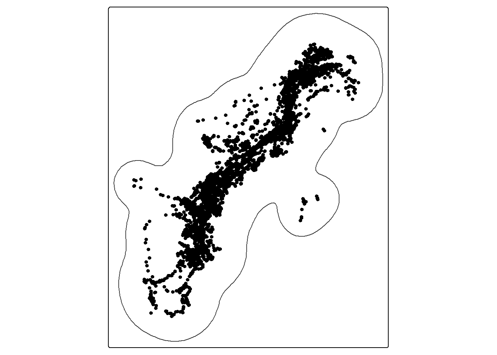
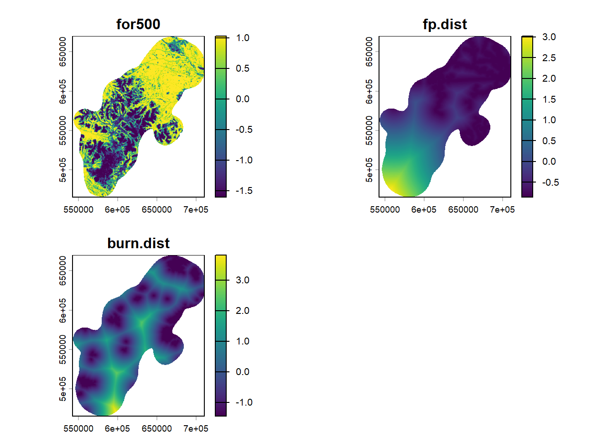
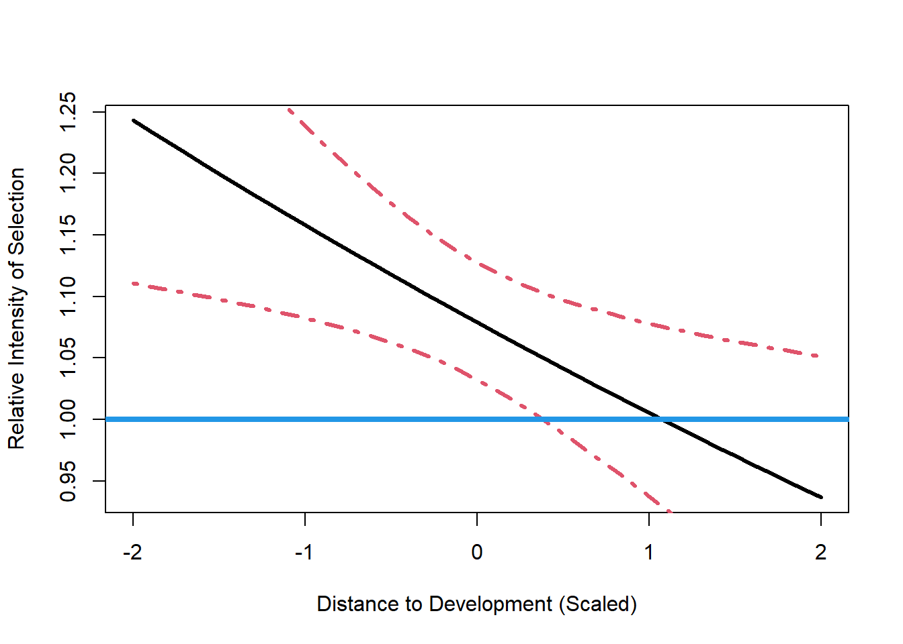
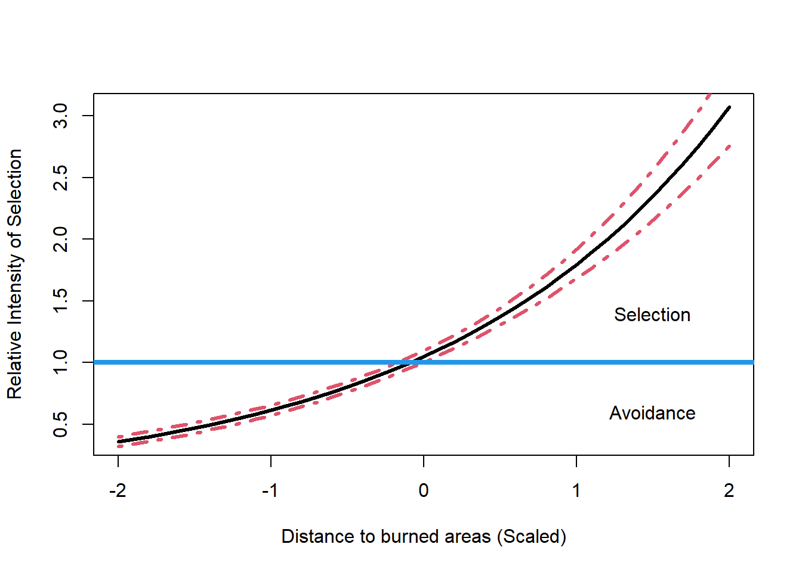
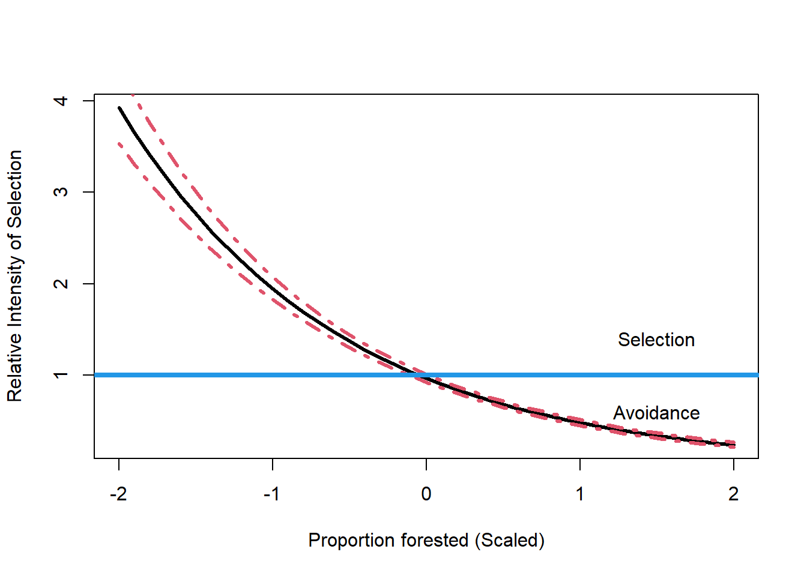

Traditional Habitat Selection
Introduction
Fitting models to estimate traditional habitat selection functions (HSF) at the third-order of selection (e.g. selection within the home range).
Prepare data
Note: This section can be moved to its own file eventually
Movement data
Prepare covariates

Extract covariates
# A tibble: 75,856 × 5
id for500 fp.dist burn.dist status
<chr> <dbl> <dbl> <dbl> <dbl>
1 SKRATALR0015 -0.745 -0.263 -0.0261 1
2 SKRATALR0015 -1.15 -0.281 -0.0679 1
3 SKRATALR0015 -1.22 -0.295 -0.0934 1
4 SKRATALR0015 -1.45 -0.310 -0.165 1
5 SKRATALR0015 -0.279 -0.636 -0.0368 1
6 SKRATALR0015 -0.182 -0.630 -0.279 1
7 SKRATALR0015 -0.194 -0.631 -0.259 1
8 SKRATALR0015 0.657 -0.826 0.236 1
9 SKRATALR0015 0.450 -0.763 1.16 1
10 SKRATALR0015 0.688 -0.477 2.29 1
# ℹ 75,846 more rowsFirst model
Let’s fit a model to one individual’s used and available data
Family: binomial ( logit )
Formula: status ~ for500 + fp.dist + burn.dist
Data: i18
AIC BIC logLik -2*log(L) df.resid
5183.3 5212.0 -2587.7 5175.3 9677
Conditional model:
Estimate Std. Error z value Pr(>|z|)
(Intercept) -2.76892 0.04991 -55.47 <2e-16 ***
for500 -0.70083 0.04112 -17.04 <2e-16 ***
fp.dist -0.07078 0.04523 -1.56 0.118
burn.dist 0.53709 0.04192 12.81 <2e-16 ***
---
Signif. codes: 0 '***' 0.001 '**' 0.01 '*' 0.05 '.' 0.1 ' ' 1Let’s first consider the “Intercept”. This parameter is largely the ratio of used to available sample. If we increase our available sample, this estimate will get smaller. Its value has a lot to do with how we setup the data to approximate the true underlying model. It has no biological interpretation, so we can skip it.
Next, we have estimated the effect of “for500” as -0.68. This estimate is negative, indicating that as the value of “for500” increases from its mean (defined at 0) while the values of forest and shrub (the other variables in the model) are held at their mean that habitat selection decreases. In other words, habitat use relative to what is available to this individual (as we defined it!) decreases the greater the proportion of forest. That’s a lot of qualifiers to understand this estimate. These are important though. In terms of evidence of an effect, we can say that at a defined probability of Type I error of 0.05, we have a statistically clear effect and that that it is not likely zero. The evidence of this is the very small p-value of ?.
Next, we have estimated the effect of forest as 0.12. This estimate is positive, indicating that as the value of forest increases from its mean (defined at 0) while the values of dist.dev and shrub (the other variables in the model) are held at their mean that habitat selection increases relative to what is available to this individual. At our defined Type I error we do not have statistical clarity and there is a reasonable chance that it is zero. (p-value = 0.4665834).
Next, we have estimated the effect of shrub as 0.88. This estimate is positive, indicating that as the value of shrub increases from its mean (defined at 0) while the values of dist.dev and forest (the other variables in the model) are held at their mean that habitat selection increases relative to what is available to this individual. At our defined Type I error we do have statistical clarity of an effect that is not zero (p-value = 8.2627753^{-7}).
Relative Selection
How do we quantitatively evaluate two locations in terms of habitat selection using our model results? We can do so using Equation 8 of Fieberg et al. 2021.
Perhaps we want to compare a location that is very near development (dist.dev = -2) at high forest and shrub cover (forest = 2, shrub = 2) with that of a location far from development (dist.dev = 2) and also at high forest but low shrub cover (forest =2, shrub = -2).
for500
141.4126 If given equivalent availability between these two types of sites ( 1) near development at high forest and shrub cover, 2) far from development at high forest and shrub cover ), this individual would relatively select the first location by a factor of 2801.05.
Why are we exponentiating our linear combinations of terms (additions of covariates times estimated coefficients)? This is because in this setup, we have assumed the habitat selection process follows an exponential form (see section 10. The model being approximated) and equation 1 of Gerber and Northrup, 2020.
Relative Selection Strength
Avgar et al. 2017 refers to the relative selection strength (RSS) as the exponentiation of each coefficient.
For example,
fp.dist
0.9316645 Given two locations that differ by 1 standard deviation of dist.dev, but are otherwise equal, this individual would be 1.1324727 as likely to choose the location with higher dist.dev (or, equivalently, 0.8830235 times more likely to choose the location with the lower dist.dev.
Prediction
Lets combine our covariates now to predict relative habitat selection over more scenarios. To do this, we need to remember we used generalized linear modeling functions to approximate our model. We need to take care when predicting. First, we need to remember to drop the intercept. Second, we need to remember our true link function for relative habitat selection is the log-link (inverse-link is the exponential function) and not the logit-link, which is the default when fitting logistic regression models.
fp.dist

We see that for this individual, given equal availability and forest and shrub at their mean values, avoid areas far from development (high values on x-axis) and select for areas close to development (low values on x-axis).
We can use this same process to extract values across spatial layers to predict relative habitat selection that is mapped.
burn.dist

for500
